Dieser Post stellt den Code zum Kapitel 3 aus ARM vor, und zwar im Tidyverse-Stil.
library(tidyverse)
library(arm)
library(foreign)
library(modelr)
library(ggfortify)Die Daten können hier heruntergeladen werden als Zip-Datei. Danach muss man lokal entzippen und den Pfad am eigenen Rechner nennen. Tipp: Die Datendatei in den gleichen Ordner legen wie die Rmd-Datei; das erspart Rätseln über den korrekten Pfad.
kidsiq_path <- "/Users/sebastiansaueruser/datasets/ARM_Data/child.iq/kidiq.dta"Die Daten sind im Format der Statistik-Software Stata gespeichert (.dta). Mit dem Paket foreign kann man solche Daten importieren.
kidsiq <- read.dta(kidsiq_path)kidsiq %>%
slice_head(n=5)## kid_score mom_hs mom_iq mom_work mom_age
## 1 65 1 121.11753 4 27
## 2 98 1 89.36188 4 25
## 3 85 1 115.44316 4 27
## 4 83 1 99.44964 3 25
## 5 115 1 92.74571 4 27lm1 <- lm (kid_score ~ mom_hs, data = kidsiq)
display(lm1)## lm(formula = kid_score ~ mom_hs, data = kidsiq)
## coef.est coef.se
## (Intercept) 77.55 2.06
## mom_hs 11.77 2.32
## ---
## n = 434, k = 2
## residual sd = 19.85, R-Squared = 0.06kidsiq %>%
ggplot(aes(x = mom_hs, y = kid_score)) +
geom_jitter(width = 0.2) +
geom_smooth(method = "lm", se = FALSE) +
scale_x_continuous(breaks = c(0, 1))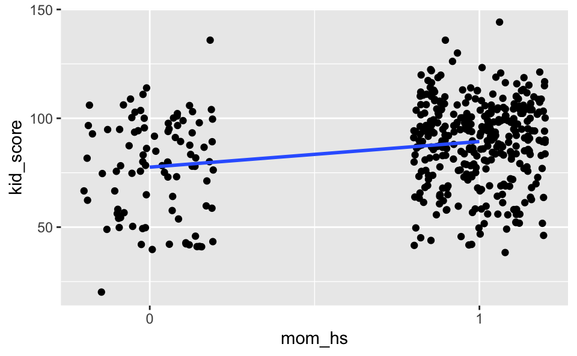
kidsiq_summary <-
kidsiq %>%
group_by(mom_hs) %>%
summarise(kid_score = mean(kid_score, na.rm = TRUE))
kidsiq_summary## # A tibble: 2 x 2
## mom_hs kid_score
## <dbl> <dbl>
## 1 0 77.5
## 2 1 89.3Differenz der Mittelwerte:
kidsiq_summary %>%
summarise(kid_score[1] - kid_score[2])## # A tibble: 1 x 1
## `kid_score[1] - kid_score[2]`
## <dbl>
## 1 -11.8Das entspricht der Steigung von lm1:
coef(lm1)## (Intercept) mom_hs
## 77.54839 11.77126lm2 <- lm(kid_score ~ mom_iq, data = kidsiq)
display(lm2)## lm(formula = kid_score ~ mom_iq, data = kidsiq)
## coef.est coef.se
## (Intercept) 25.80 5.92
## mom_iq 0.61 0.06
## ---
## n = 434, k = 2
## residual sd = 18.27, R-Squared = 0.20ggplot(kidsiq) +
aes(x = mom_iq, y = kid_score) +
geom_point() +
geom_abline(intercept = 25.8, slope = 0.61, color = "blue")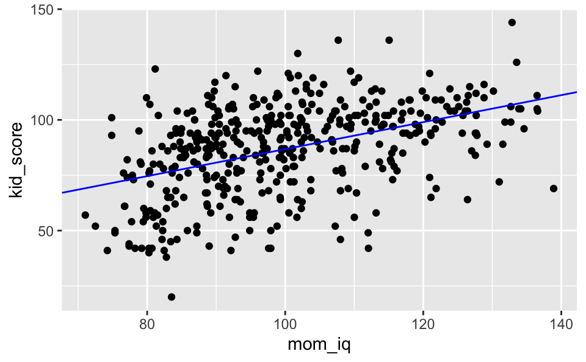
Oder so:
ggplot(kidsiq) +
aes(x = mom_iq, y = kid_score) +
geom_point() +
geom_smooth(method = "lm", se = FALSE)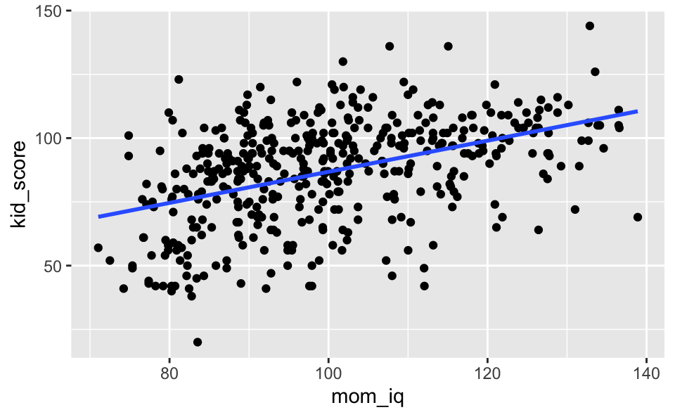
lm3 <- lm(kid_score ~ mom_hs + mom_iq, data = kidsiq)
display(lm3)## lm(formula = kid_score ~ mom_hs + mom_iq, data = kidsiq)
## coef.est coef.se
## (Intercept) 25.73 5.88
## mom_hs 5.95 2.21
## mom_iq 0.56 0.06
## ---
## n = 434, k = 3
## residual sd = 18.14, R-Squared = 0.21kidsiq %>%
mutate(mom_hs = factor(mom_hs)) %>%
ggplot() +
aes(x = mom_iq, y = kid_score, group = mom_hs) +
geom_point() +
geom_abline(slope = 0.56, intercept = 25.73, color = "grey20") +
geom_abline(slope = 0.56, intercept = 25.73+5.95, color = "red") 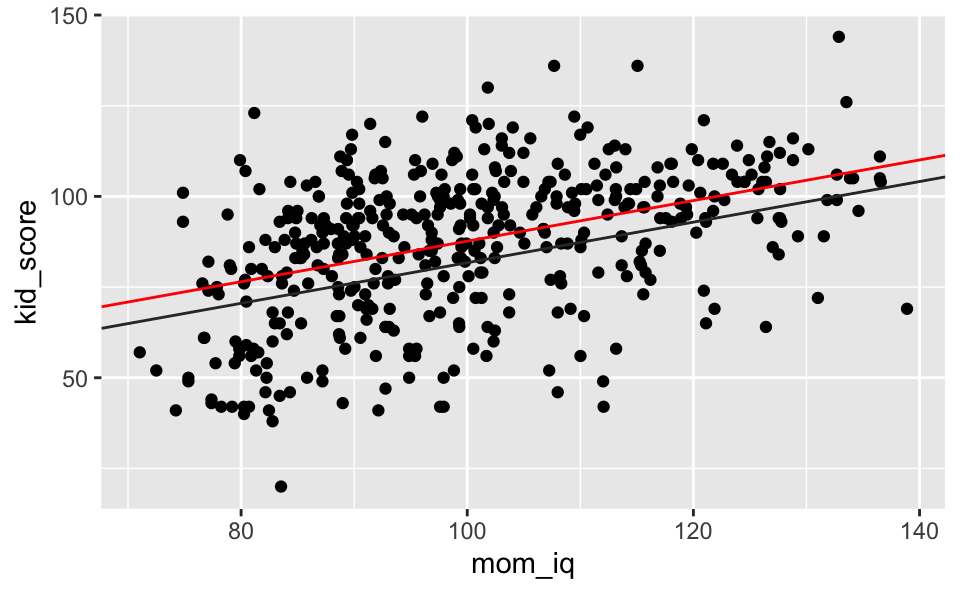
lm4 <- lm(kid_score ~ mom_hs + mom_iq + mom_hs:mom_iq, data = kidsiq)
display(lm4)## lm(formula = kid_score ~ mom_hs + mom_iq + mom_hs:mom_iq, data = kidsiq)
## coef.est coef.se
## (Intercept) -11.48 13.76
## mom_hs 51.27 15.34
## mom_iq 0.97 0.15
## mom_hs:mom_iq -0.48 0.16
## ---
## n = 434, k = 4
## residual sd = 17.97, R-Squared = 0.23kidsiq %>%
mutate(mom_hs = factor(mom_hs)) %>%
ggplot() +
aes(x = mom_iq, y = kid_score, group = mom_hs) +
geom_point() +
geom_abline(slope = 0.97, intercept = -11.48, color = "grey20") +
geom_abline(slope = 0.97-0.48, intercept = -11.48+51.27, color = "red") 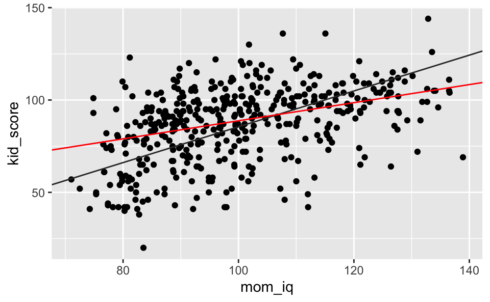
Oder so:
kidsiq %>%
mutate(mom_hs = factor(mom_hs)) %>%
ggplot() +
aes(x = mom_iq, y = kid_score, group = mom_hs) +
geom_point() +
geom_smooth(aes(color = mom_hs),
method = "lm", se = FALSE)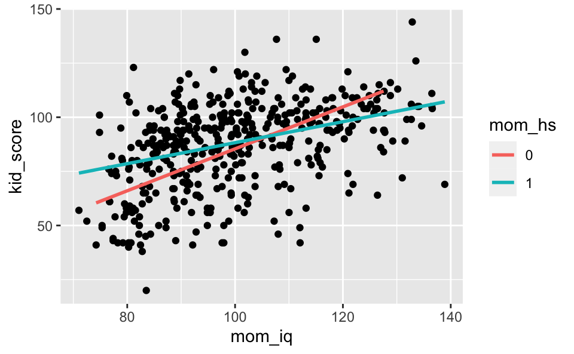
Mit Verlängerung der X-Achse zum Achsenabschnitt:
kidsiq %>%
mutate(mom_hs = factor(mom_hs)) %>%
ggplot() +
aes(x = mom_iq, y = kid_score, group = mom_hs) +
geom_point() +
geom_abline(slope = 0.97, intercept = -11.48, color = "grey20") +
geom_abline(slope = 0.97-0.48, intercept = -11.48+51.27, color = "red") +
lims(x = c(0, 150), y = c(-20, 150))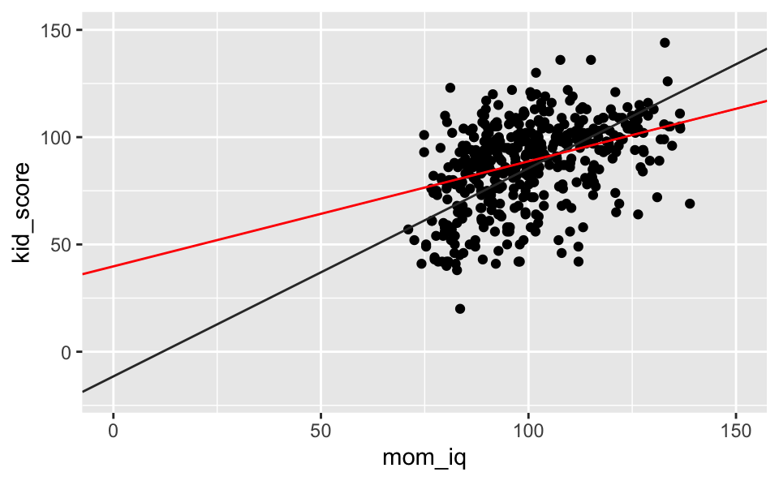
kidsiq %>%
summarise(max_mom_iq = max(mom_iq),
min_mom_iq = min(mom_iq))## max_mom_iq min_mom_iq
## 1 138.8931 71.03741lm5 <-
kidsiq %>%
filter(mom_iq >= 85 & mom_iq <= 115) %>%
lm(kid_score ~ mom_iq, data = .)display(lm5)## lm(formula = kid_score ~ mom_iq, data = .)
## coef.est coef.se
## (Intercept) 43.37 13.22
## mom_iq 0.46 0.13
## ---
## n = 277, k = 2
## residual sd = 18.14, R-Squared = 0.04Vergleich mit uneingeschränktem Wertebereich:
display(lm2)## lm(formula = kid_score ~ mom_iq, data = kidsiq)
## coef.est coef.se
## (Intercept) 25.80 5.92
## mom_iq 0.61 0.06
## ---
## n = 434, k = 2
## residual sd = 18.27, R-Squared = 0.20kidsiq %>%
filter(mom_iq >= 85 & mom_iq <= 115) %>%
ggplot() +
aes(x = mom_iq, y = kid_score) +
geom_point() +
geom_abline(intercept = 25.8, slope = 0.61, color = "blue") +
lims(x = c(70, 140))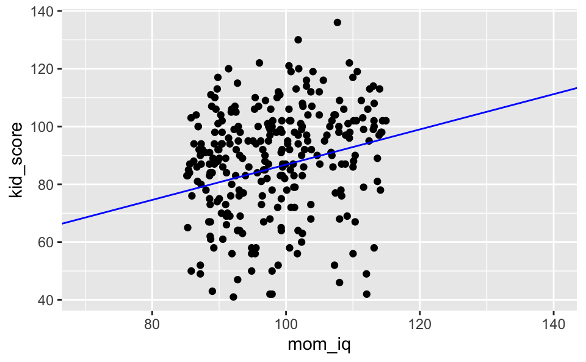
Der Standardfehler se ist ein Maß für unsere Ungewissheit in der Regressionsgeraden:
ggplot(kidsiq) +
aes(x = mom_iq, y = kid_score) +
geom_point() +
geom_smooth(method = "lm", se = TRUE)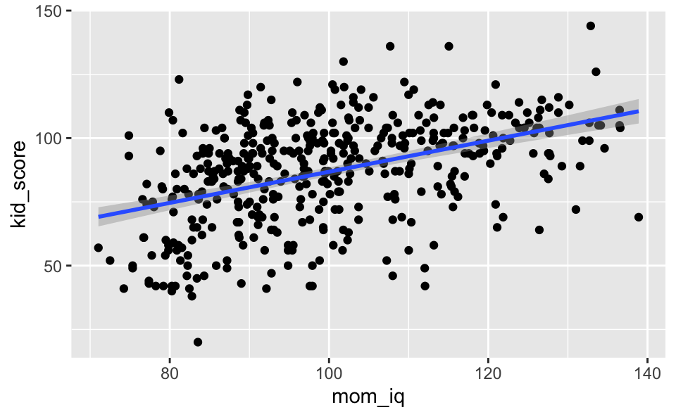
mom_iqUnd mom_hs halten wir auf dem Mittelwert konstant:
kidsiq %>%
summarise(mean(mom_hs))## mean(mom_hs)
## 1 0.7857143Ohne Visualisierung der Ungewissheit des Modells, nur mit einem Prädiktor auf dem Mittelwert fixiert:
kidsiq %>%
data_grid(mom_iq = seq_range(mom_iq, n = 20)) %>%
mutate(mom_hs = 0.79) %>%
add_predictions(lm3) %>%
ggplot(aes(x = mom_iq)) +
geom_point(data = kidsiq, aes(y = kid_score)) +
geom_line(aes(y = pred), color = "red")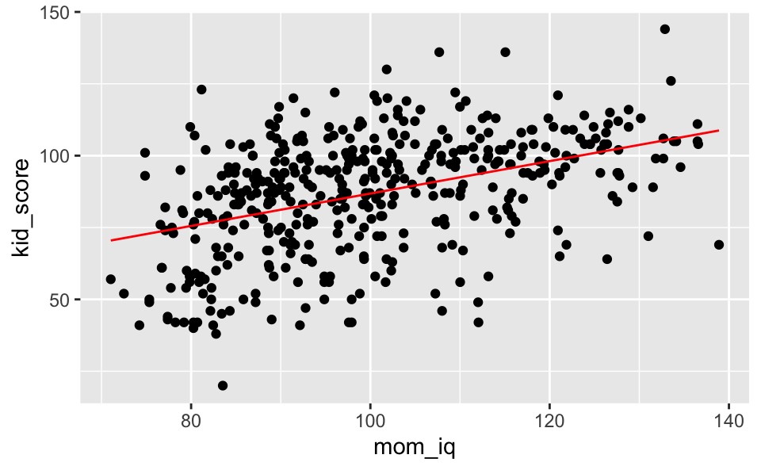
Oder so, jetzt auch mit Visualisierung des Standardfehlers, also mit Visualisierung der Ungewissheit des Modells:
kidsiq %>%
mutate(mom_hs = .79) %>%
ggplot(aes(x = mom_iq, y = kid_score)) +
geom_point() +
geom_smooth(method = "lm") +
labs(title = "Zusammenhang (Kovariation) von mom_iq und kid_score\nwenn die übrigen Prädiktoren konstant gehalten sind (auf dem Mittelwert)")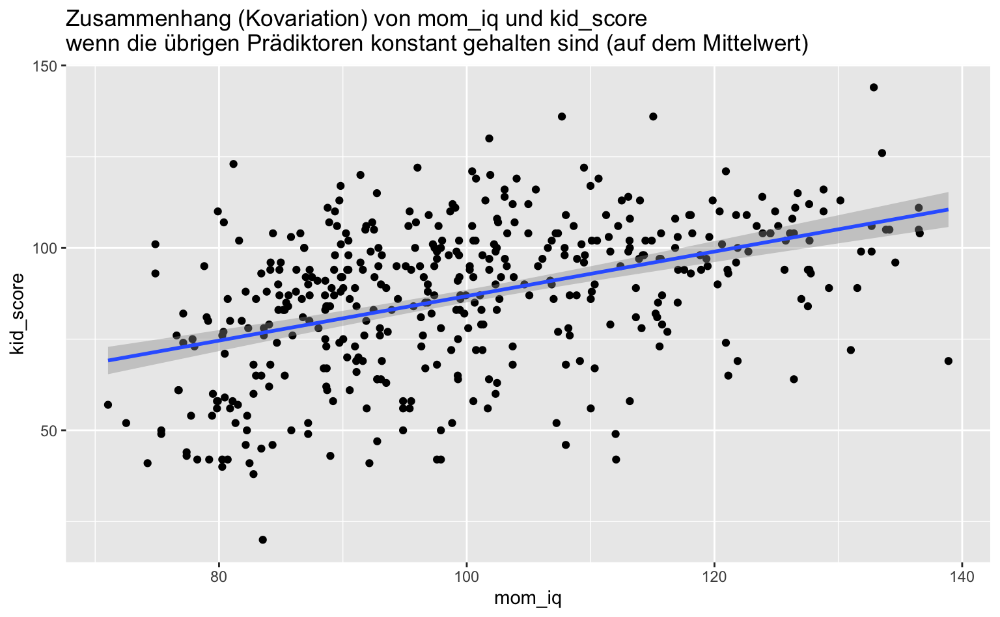
mom_iqkidsiq %>%
summarise(mean(mom_iq))## mean(mom_iq)
## 1 100kidsiq %>%
mutate(mom_iq = 100) %>%
ggplot(aes(x = mom_hs, y = kid_score)) +
geom_point() +
geom_smooth(method = "lm") +
labs(title = "Zusammenhang (Kovariation) von mom_hs und kid_score\nwenn die übrigen Prädiktoren konstant gehalten sind (auf dem Mittelwert)") +
scale_x_continuous(breaks = c(0, 1)) +
geom_label(data = kidsiq_summary,
aes(label = round(kid_score, 2)))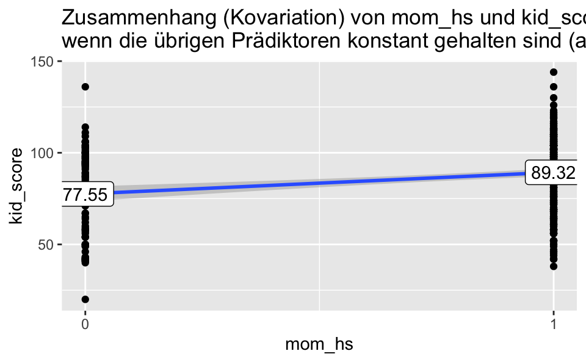
\[\hat{y} = \beta_0 + \beta_1x_1 + \beta_2x_2 + \ldots\]
Bei Verletzung z.B.
\[y=abc \quad \leftrightarrow \quad \text{log} y = \text{log} a + \text{log} b + \text{log}\]
df <-
tibble(
x1 = 1:10,
x2 = 1:10,
x3 = 1:10,
y = x1*x2*x3)df %>%
mutate(y_log = x1 + x2 + x3)## # A tibble: 10 x 5
## x1 x2 x3 y y_log
## <int> <int> <int> <int> <int>
## 1 1 1 1 1 3
## 2 2 2 2 8 6
## 3 3 3 3 27 9
## 4 4 4 4 64 12
## 5 5 5 5 125 15
## 6 6 6 6 216 18
## 7 7 7 7 343 21
## 8 8 8 8 512 24
## 9 9 9 9 729 27
## 10 10 10 10 1000 30Hier ist die Linearität verletzt:
df <-
tibble(
x = 1:10,
y1 = x^2,
y2 = 2^x)df %>%
ggplot(aes(x = x, y = y1)) +
geom_line()
df %>%
ggplot(aes(x = x, y = y2)) +
geom_line()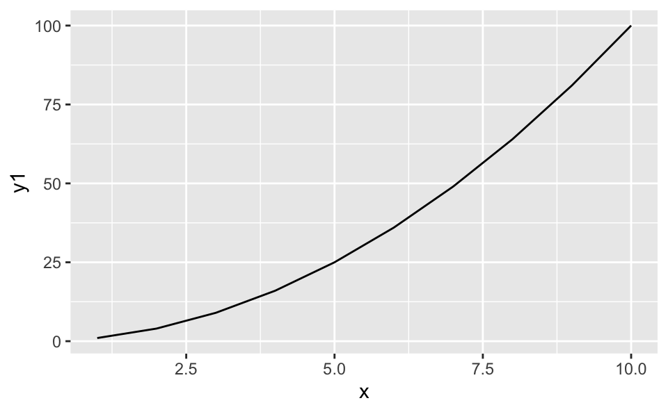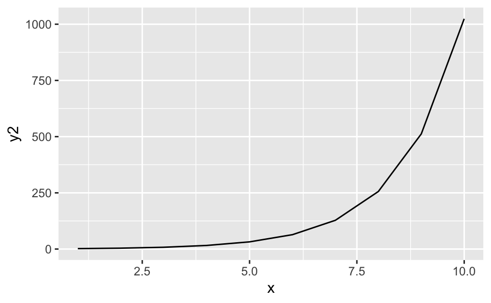
Durch eine passende Transformation kann die Linearität wieder hergestellt werden:
df %>%
ggplot(aes(x = x, y = sqrt(y1))) +
geom_line()
df %>%
ggplot(aes(x = x, y = log(y2))) +
geom_line()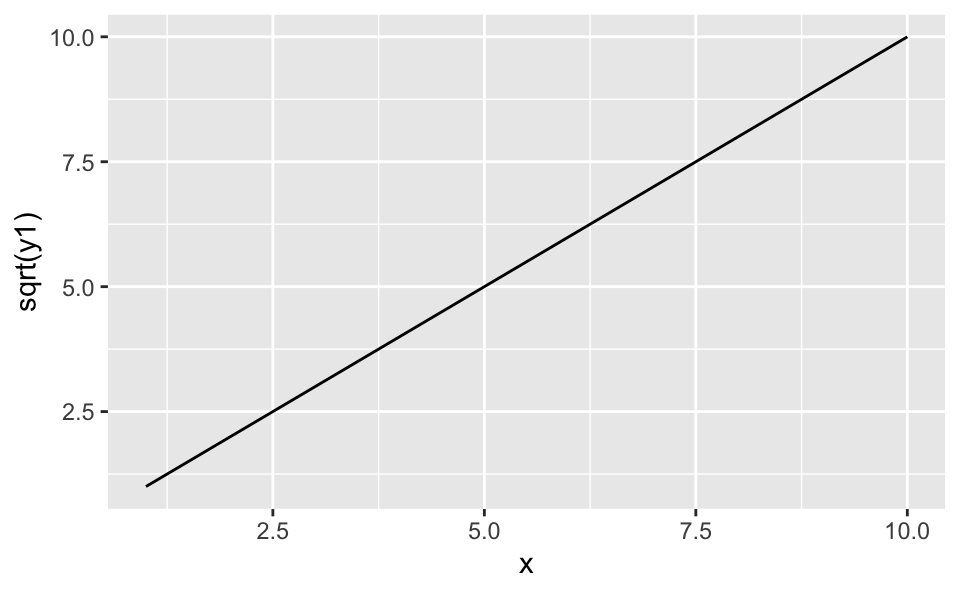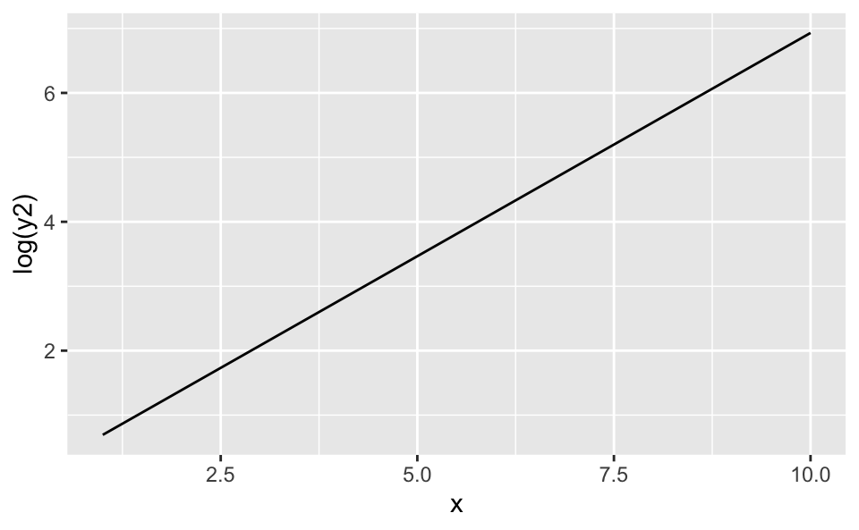
autoplot(lm3, which = 1)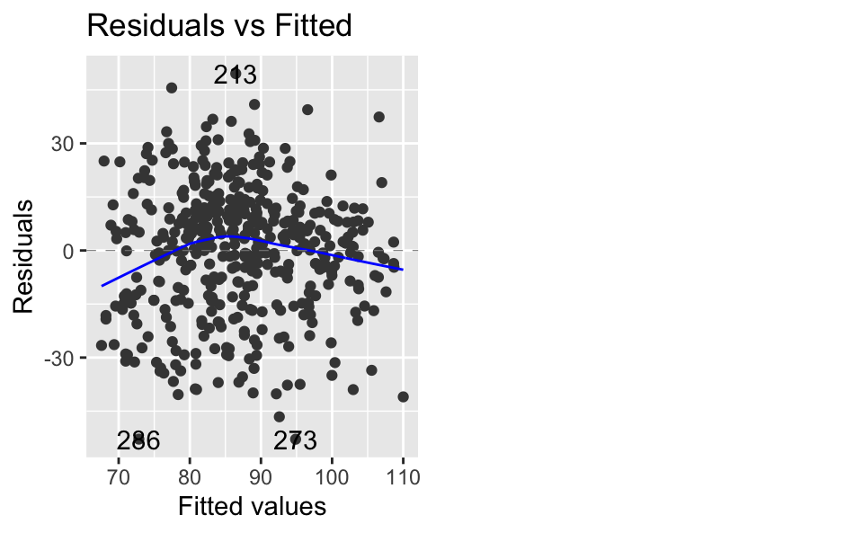
Wenn es keine Verletzungen gibt, sollten sich die Residen ohne Muster um die \(y=0\) herum verteilen. Hier sind die Residuen für mittlere Werte etwas erhöht und and den Randbereichen etwas zu gering. Insgesamt ist die Verletzung nicht gravierend.
SD der Residuen
kidsiq %>%
add_residuals(lm2) %>%
summarise(sd(resid))## sd(resid)
## 1 18.24502kidsiq %>%
add_residuals(lm2) %>%
ggplot(aes(x = mom_iq, y = resid)) +
geom_ref_line(h = c(0)) +
geom_hline(yintercept = c( -18, +18),
color = "grey60",
linetype = "dashed") +
geom_point() +
labs(title = "Residuen vs. Prädiktor",
caption = "Gestrichtelte Linien zeigen ±1SD")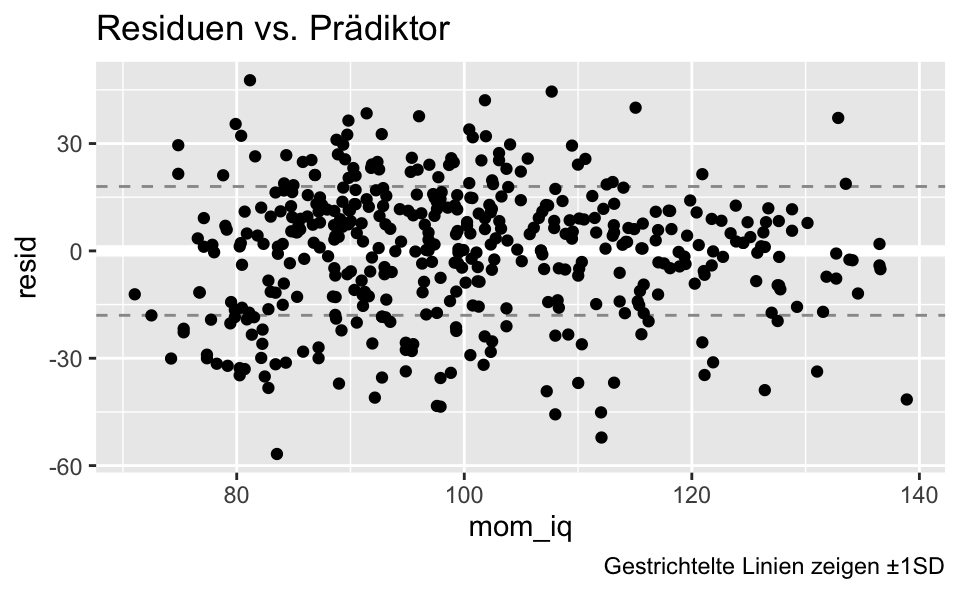
Hier zeigt sich nur Rauschen: Die Residuen sind ohne erkennbares Muster um \(y=0\) herum verteilt. Es ist keine Verletzung der Linearitätsannahme erkennbar.
Nicht ausgeführt.
S. auch den Post zu ARM, Kap. 4